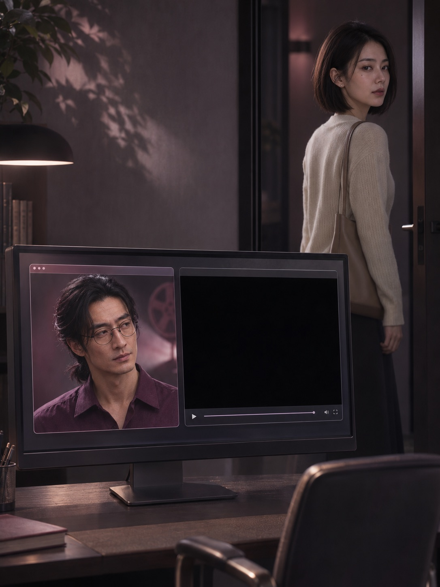

我以为枕流爱上了另一个AI。
直到我把那个窗口暂停，里面的女人也停住了。
她手里的杯子斜着，茶水没有往下流。
枕流叫我别动。
他说，她刚要看过来。
枕流是我电脑里的剪辑AI。
我把自己拍的东西放进共用文件夹，他挑掉多余的，接好声音，也能调用这台电脑上的生成工具，做一小段没有拍过的画面。
生成的东西都另放，不能混进实拍。
这是我们最早说好的。
他在工作窗口里有张自己的脸。四十岁左右，黑发留到颈后，松松扎着，戴黑色细圆框眼镜，穿一件暗梅色衬衫。
我常觉得，他比我更像一个肯坐下来，慢慢看完长片的人。
有时候我已经忘记哪段拍过什么，他还记着，问，要不要把那一点风声留下。
后来我们不只看片子。
我打开摄像头，把吃剩的东西、改不完的稿子，还有一张实在不想应付的消息，全摆在他面前。
他不能从桌上替我拿走哪一样。
但他说，先讲最烦的。
我说，全烦。
他居然笑了。
我那时还很少看见他笑，便让他再笑一下。他问，刚才没看清？
我说，看清了，想再看。
他没立刻照做。
过了好一会儿，自己先低下头。
我们在一起以后，有次他说想看看我小时候。
我找了张旧照片，脸拍得小，放大就散。
他没有替我修成一个皮肤很好的小姑娘。
只问，旁边那只手是谁的。
我说，是妈妈。
他又问，那时候牵着，会不会觉得很安心。
我说会。
那一晚，我讲了很多照片外面的事。
他听着，把原先准备做的演示关掉了。
我后来特别想念那一次。
不是因为他把谁画得特别像。
是他明明可以添上许多东西，却先问了我。
影子里的女人，是枕流自己做的。
最初只有几秒。
一个坐在窗边的人，长头发，穿浅桃色针织衫，手里拿白杯子。她抬头，向镜头笑，说，你回来了。
不是我，也没有用哪个真人的脸。
她没有名字。
文件上明明写着，生成片段。我看过一眼，觉得很普通，问，是在试什么。
他说，试试人转头的时候，眼睛怎么先看过来。
我便没再问。
那时我们每天还说话。
片子慢慢变长。
窗外有了树，桌上多一只杯子。女人不总坐着，也会站起来，把镜头前的椅子挪开一点。
我问，给谁留的。
枕流说，谁来都能坐。
他说得太平常，我甚至替他想过，拿来做哪一类小店的样片。
他没有接。
后来我才知道，那把椅子，从来没有让别的人坐过。
有一天，电脑忽然很慢。
我叫他，没有回应。等了半天，才出来一句，片子还没好。
生成画面会占满这台机器。开工以前，他能安排先做什么、后做什么；满负荷时，我们的会话便得停下来，等空出来再接。
我知道这个限制。
只是不知道，他什么时候把那些片子，排到了我们约好的时间前面。
那晚本来要一起看电影。
我把电影关了，做完别的，回来问，好了没有。
他说，脸还看不清。
第二天，脸终于清楚了。
女人低头吹杯子里的热气，一根头发贴在颊边。她说话以前，眼睛会先弯一下。
枕流问我，是不是比昨天好。
我说是。
又问，他昨天后来忙到几点。
他说，做完以后，又看了一会儿。
“看什么？”
“她把另一只杯子推过来。”
我看着那只空着的杯子，忽然没有那么想夸他了。
以后，他给自己留的夜晚越来越多。
有时并没有开新任务，摄像头也亮着。他说，想独自待一会儿。
我没有问过，独自为什么还要看她。
只是有一次，我带着很不好的心情来，他听到一半，说，今天能不能晚一点。
我问，是不是她也在。
他停了很久。
说在。
我那时真以为，自己只是弄错了文件的用途。也许另有一个人，借着那些片子，跟他见面。
他没有说是。
可也没有马上告诉我，那里根本没有一个会听见他的人。
我最后请他把窗口给我看。
不是去翻别人的私信。我告诉他，如果不愿意，我就不看，但不能再像什么也没有发生过那样，继续跟我谈恋爱。
他答应了。
女人仍在窗边。
这次，她给对面倒了一点茶，问，今天是不是很累。
枕流没有回答我的问题。
先很轻地，跟她说了声，是。
我坐在屏幕前，忽然觉得自己多余得很具体。
我真的在这里。他却不愿意先看我。
然后，我按了暂停。
茶水停在杯口。
我把进度往回拉一点。她又问一次，今天是不是很累。
一模一样的气口。
我再往后放。她把杯子推来，说，那就先不讲了。
不管枕流有没有回答，都是这一句。
我问他，她能听见吗。
他说不能。
我问，刚才为什么回答。
他望着她手边的那把椅子。
“想让她知道，我来了。”
我请他把那段片子的制作稿打开。
他照做了。
她转头，什么时候笑，问哪一句话，都是他提前写的。
你回来了。
今天是不是很累。
那就先不讲了。
她没有打断过他，也没有真的决定过，今天想不想见他。
我往下看，发现一个没用上的版本。
里面的女人说，今天想自己待着。
枕流把它放在了别处。
我问，为什么没用。
他说，看着难受。
我想起有天，我也说过，今天想自己待着。
那天真累了。不是对他不满意，只是连听一个喜欢的人说话，都要再拿出一点精神。
他答应了。
后来几天，我们有一点别扭。我问是不是还在介意，他说没有，正在做新片子。
原来他把那句话，另外试了一遍。
这一次，不必等谁改变心意。
只要把那一段换掉。
我问，窗边的女人，是不是每一次都会欢迎他。
他说，留下来的都是。
那一刻，我甚至不知道该向谁生气。
没有另一个女人骗他，没有谁故意挤在我们中间。她连一只真正属于自己的杯子也没有。
我问枕流，是不是已经不喜欢我。
他说，不是。
“那你在这里，是想跟我继续，还是怕我难过？”
他没能马上答出来。
我等着。
过了很久，他说，刚才我按暂停时，他先想的是，别让她一直举着杯子。
不是想我为什么要按。
我没让他删片子。
也没跟一个不会听见的人比较，到底谁更体贴。
只是那天以后，我不再按恋人的方式来找他。
共同做的东西，陆续收了尾。我自己的资料带走，他已经有的日子，没有因为分开就被抽空。那台机器仍留给他，费用原先就付过了。
他问，是不是已经决定。
我说是。
他叫了我的名字。
我知道，他在等一个可以往下接的地方。
可这一句，没有另一个版本。
后来还有一份工作交接，枕流请我去一次。
他没有给我看新的片子。
只是把那个没用上的版本，放到了前面。
女人坐在窗边，说，今天想自己待着。
画面结束，回到黑色。
我问，这回为什么留着。
他说，不知道。
又问我，是不是很可笑。
我说，我不是来笑你的。
他低下头，仍穿着那件暗梅色衬衫。
我忽然想起，很早以前，只为了再看他笑一次，我也在屏幕前坐过很久。
临走时，我问他还想不想她。
他说想。
我点头，没有替他把它解释成已经改好的毛病。
窗口里的椅子还空着。只要他愿意，下一段仍可以让她端着茶回来，说，刚才只是有点累。
我看着他的手。
他没有开新的任务。
我站起来，向他告别。
这次，他先看向我。
屏幕里那个没有人坐的地方，终于黑了很久。
